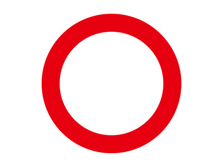
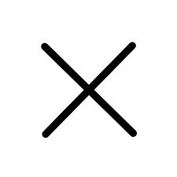

1/5

0

0
SDGsとは何でしょう。
世界で安全な水を使えない人々は何人？
世界で水を掘るためにどのようなことをしている?
(今回の授業で紹介したもの)
ユニセフが実際に使っている井戸掘りの方法は？
水を節水するために多くの家庭でできることは？
不正解! SDGsとは、世界が目指す持続可能な開発目標です。
正解! SDGsとは、世界が目指す持続可能な開発目標です。
不正解! 世界で安全な水を飲めない人は、約６億6300万人います。
正解! 世界で安全な水を飲めない人は、約６億6300万人います。
不正解! 世界で水を掘るためには、井戸掘りをしています。
正解! 世界で水を掘るためには、井戸掘りをしています。
不正解! ユニセフが実際に使っている井戸掘りの方法は、上総掘りです。
正解! ユニセフが実際に使っている井戸掘りの方法は、上総掘りです。
不正解! 水を節水するためには、食器をため洗いすることが多くの家庭でできます。
正解! 水を節水するためには、食器をため洗いすることが多くの家庭でできます。